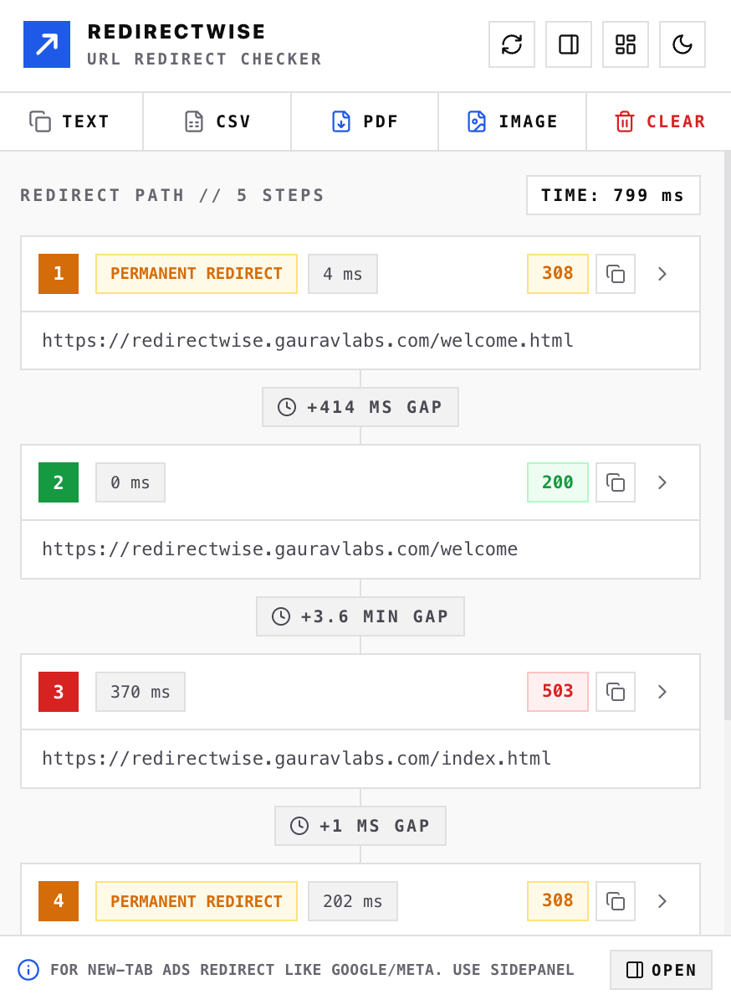
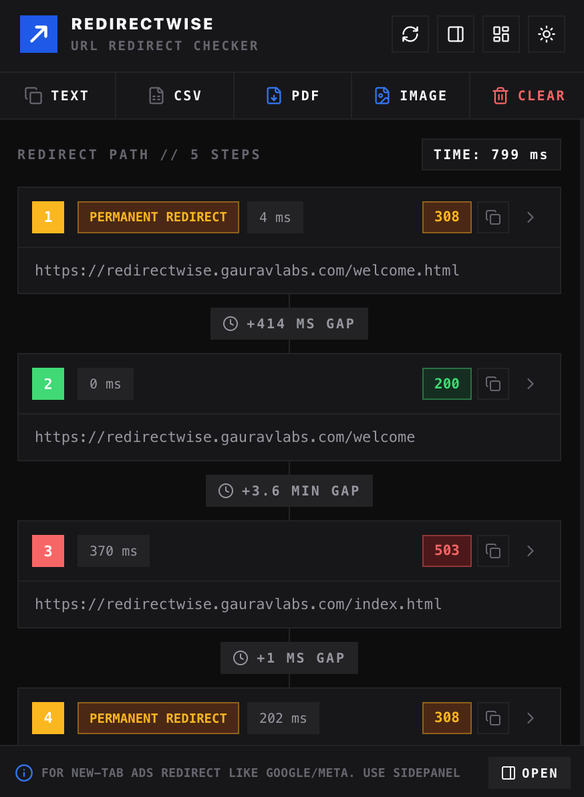

CATCH HIDDEN AD LINKS.
A high-precision real-time redirect tracker and response header auditor. Logs every hop with millisecond timing across popup, pinned sidepanel, and a persistent 2,000-URL dashboard.


Every feature is built around the HTTP specification to eliminate blind spots in redirect chains.
Captures 301, 302, 303, 307, 308 server redirects, client-side JavaScript navigations, HTML meta refreshes, and automatic HSTS protocol upgrades.
Unlike basic extensions that wipe data on page reload, RedirectWise securely logs up to 2,000 redirects in an on-device searchable database.
Measure the exact delay between previous request finish and subsequent hop start. Pinpoint slow intermediate ad trackers and redirect hops.
Inspect raw and categorized headers: Cache-Control, Strict-Transport-Security (HSTS), Content-Security-Policy (CSP), server identifiers, and IP addresses.
Use the lightweight popup for rapid ad-hoc audits, or pin the Chrome Side Panel for continuous live stream navigation tracking as you browse.
Generate clean technical reports in one click. Export to PDF with timestamps, downloadable PNG charts, or tab-delimited CSV for spreadsheet workflows.
Pure Manifest V3 service worker design with zero remote script execution.
Add RedirectWise from the Chrome Web Store or Edge Add-ons. It requests standard webNavigation and webRequest permissions to audit network requests locally.
Click any affiliate link, ad URL, or shortened link. RedirectWise intercepts the hop sequence in the background service worker without slowing down page rendering.
Open the popup, sidepanel, or full-page dashboard to inspect every status code, response header, and millisecond gap. Export to PDF, PNG, or CSV in one click.
Verify 301 vs 302 redirects during site migrations and domain consolidation.
Catch infinite redirect loops and SSL misconfigurations before they break user journeys.
Audit ad network redirects, subid parameter passing, and middleman tracking hops.
Ensure strict HTTPS compliance and inspect security policies like CSP, COOP, and HSTS.
RedirectWise is an advanced URL redirect checker and HTTP response header analyzer. It intercepts network navigation in real-time, mapping out 301, 302, 307, 308, JavaScript redirects, Meta Refreshes, and HSTS protocol jumps.
No. RedirectWise is 100% private and runs entirely on-device inside your browser. No telemetry, no analytics, no external APIs, and no cloud databases.
Yes. Basic tools lose data when a URL refreshes. RedirectWise logs up to 2,000 URLs in a persistent indexed database so even aggressive ad redirects remain recorded.
RedirectWise is available on Google Chrome and Microsoft Edge, built natively with Manifest V3.
Start auditing HTTP redirect chains with microsecond precision. Free, open source, and completely on-device.